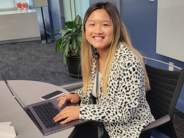

Julia Cheng

Contact
Education
James Madison University (BA)
- Major: Media Arts & Design
(Concentration: Interactive Design)
- Minor: Computer Science
- Activites: Delight Ministries Team Director,
Kinetix Breakdance Crew Secretary
- Honors: President's List (Spring 2021), Dean's List
(Fall 2020, Fall 2021, Spring 2022)
Skills
- Indesign, Illustrator, Photoshop
- Figma
- Invision
- Instapage
- AP Style
- Knowledge in Java, HTML, CSS
Experience
Society for Human Resource Management (SHRM)
Associate Specialist, Art Design
| Aug. 2022 − Present
- Became familiar with various SHRM brands and created deliverables
- Designed for print, web and digital
- Brainstormed and collaborated with team for campaigns
- Communicated with clients to fulfill design requirements and needs
Art Design Intern | May 2022 − Aug. 2022
- Created informative graphics for company use
- Followed style guides and expressed creativity for affiliated brands
- Received feedback and applied critiques to designs
Federal Reserve Board of Governors
D&I Intern | June 2021 − Aug. 2021
- Researched financial organizations for leading practices in D&I
- Created thoughtful design and communicated ODI’s story for presentations
- Examined data sets and brainstormed ideas to increase diversity within organization